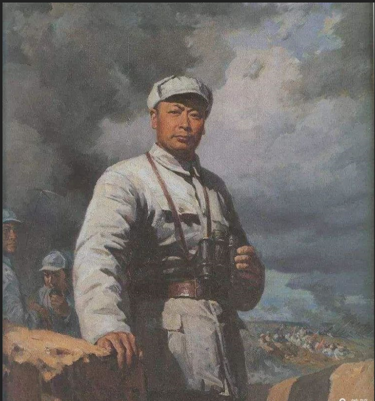

摘要：陈毅生平事迹陈列馆珍藏着一张带有深深折痕的照片，这张照片是随一封陈毅写给父母的信一起送达的。
陈毅生平事迹陈列馆珍藏着一张带有深深折痕的照片，这张照片是随一封陈毅写给父母的信一起送达的。在抗战时期，这是殊为不易的，而它能保存到今天也体现了陈毅在人民群众心中的崇高地位。
1943年底，陈毅留下一首《赴延安留别华中诸同志》，即赶赴延安。到达延安后，陈毅参加了中共中央在延安召开的第七次全国代表大会，当选为主席团成员、中央委员会委员。是时，全党全军正在开展“整风运动”，陈毅积极投身其中，时常与毛泽东促膝谈心，书信往来，向毛泽东介绍自己在“整风运动”中的收获。毛泽东复信称赞道：你的思想一通百通，无挂无碍，从此到处是坦途了。
其间，陈毅因思念远在四川的父母，将自己开展劳动的照片附信寄往。为了避免信件被日伪军拦截，陈毅将信中“延安”二字改为“西安”，并落款为“儿仲弘敬书”。信件几经周折，顺利送达父母手中。
新中国成立后，陈毅父母将这张照片赠予陈毅的侄女陈德珍。